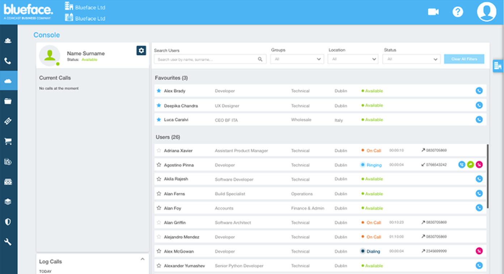

Call managing tool
Project
Our console is a key part of our communication platform, helping to monitor and manage calls for the whole company or specific teams. Even though the product is up and running, it has some minor issues. Since we're moving the portal to a new tech stack, it's a great time to review and update the interface. Our goal is to make the console work better and be more user-friendly.
Goal
Research and design solutions to fix known and newly discovered issues, improving the overall usability of the console.
Team
- 3 UX/UI designers
- Product team
- Developers
My role
I created mockups, facilitated user interviews, and participated in workshops to gather insights and feedback. My work focused on understanding user needs and pain points to develop a more intuitive and effective console design.
Previous Research and Identified Issues
We had conducted some research earlier, which led to a few changes that needed testing. Problems Identified from Previous Research:
- Layout. Users couldn't see their own calls and others' calls at the same time. We tested new layout ideas to allow simultaneous viewing of both.
- Users. At first, no users were shown, but there was a button to add all users to favorites without an option to remove them later.
- Accessibility. Adding or removing users from favorites was only possible through drag-and-drop, which wasn't accessible to all users.
Research Plan
Also we wanted to ask some additional questions to understand how users using current implementation and what issues do they have.
- Search and Filters.- How and when users using filters and search?- How easy for users to use filters and search?- If there are any issues for users related to search and filters?
- Favourites.- If users understand where is the favourites? - How easy for users add/remove favourites? - How easy for users find their favourites?
- Layout.- What users thinks about current layout? - How easy for users to find information with this layout?
- Calling.- If users use console for making, receiving, transferring calls? - Do they know how perform this actions? - What issues do they have?
Method
We conducted mederated remote testing using Figma and Google Meet.
Participants
We sought users who were already using the tool and some new users. Our ideal participants worked in teams of more than three people, frequently making and receiving calls managed by any team member, such as in customer or technical support.
First Iteration
For the first two iteration we tested layout, favourites and search and filter behaviour. During the first iteration it become clear that current layout not ideal and we need to think about something new.
Some Insights
- Users don't understand what filter is - title disappear after selecting
- Users are not using the filters by group because groups not updated regularly by managers
- Some users don't understand where is favourites in current layout but they like this feature in new design
- Right panel with selected user calls confusing - participants expected to see details near the user card or on the left as in current version
- Console too slow on loading
Second Iteration: New Layout
For the second iteration we bring completely new layout based on feedback from the users We had some concerns as previously users told us that they really like tiles, but we decided to test this version with an old one. After a number of test it's appear that new version more clear and easier to work with.
10
participants
100%
Participants prefer new version
+20%
faster to perform task compare to old version
Third Iteration
Second iteration was a complete success. Next step was to add calling to the design. The tricky part that you can't call from the console. It only helps you manage calls on other devices. Here actions you can do in the console:
- Make a call
- Intercept Call
- Forward Call
- Transfer Call
- Cancel Call
- Put on hold
Some of existed issues we already knew:
- In transfer modal you can't see list of users without filters
- In forward mode you can see only favourites
Hypoteses
We had a few hypoteses to test:
- We wasn't sure about Forward word, as action very close to transfer with product managers we were thinking that it might be easier to have just one name
- In the modal to transfer we introduced filters and favourites. For filters we wasn't sure about the space and tried to hide it behind the filter button
- In one version we added success screens and animations to see if users can see the difference